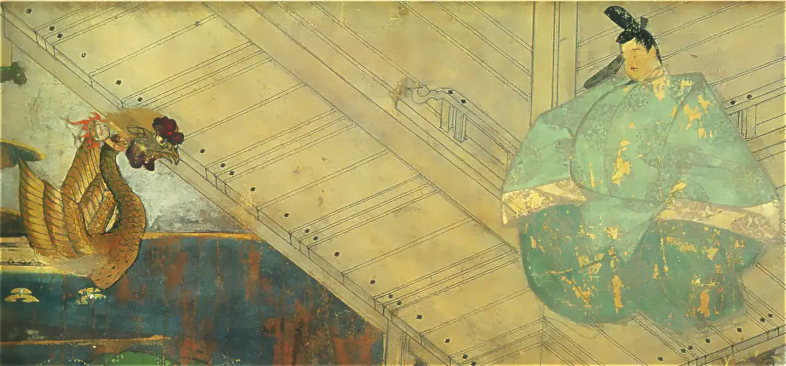

藤原道長と望月の歌

.jpg){kind=link}
藤原道長は、平安時代中期に政治の実権を握り、藤原氏による摂関政治の最盛期を築いた人物です。娘たちを次々と天皇の后とし、外祖父として朝廷の政治を主導することで、当時ほぼ頂点ともいえる権力を手にしました。
道長の娘・彰子のもとでは女流文学が花開き、紫式部や和泉式部など、後に百人一首に選ばれた平安中期の歌人たちが活躍した宮廷文化も、道長の時代に大きく発展しました。
その栄華を象徴するものとしてよく知られているのが「望月の歌」です。道長が自身の権勢を象徴するように詠んだ歌として、後世まで語り継がれています。
この歌を手がかりに、当時の宮廷の姿をたどってみたいと思います。
原文
この世をば 我が世とぞ思ふ 望月の
欠けたることも なしと思へば 『小右記』より
現代語訳
この世は我が世であると思う。
満月に欠けるもののないように、
すべてがそろっている。
当初は家督を継ぐ立場になかった道長
藤原道長は、藤原兼家の子として誕生しました。しかし道長は五男として生まれたため、当初は家督を継ぐ人物とは考えられていませんでした。兼家は長男の道隆を後継者にしようと考えており、二男には道兼、三男には道綱、四男には道義という兄たちがいました。ただし、道長は兼家の正妻・時姫の三番目の息子であったため、五男と言えど、実質は三男の立場だったと考えられています。
道長が権力を握ることになった背景
長兄である道隆は関白を務め、生前から嫡男の伊周を積極的に昇進させました。伊周は21歳で内大臣となり、その当時は道長よりも8歳年下でありながら、すでに道長よりも高い地位にありました。道隆は疫病にかかり、自らの死期を悟ると、一条天皇に伊周を関白にするよう願い出ました。天皇は道隆が病気の間という条件で、伊周に関白に準じる権限を与えました。
そんな中、長兄の道隆、次兄の道兼が次々に亡くなると、姉の藤原詮子の強い後押しにより、急にお鉢が回ってきたかたちで道長が内覧に就き、右大臣になりました。内覧は関白に準じる立場で、非常に大きな権力を持つ地位でした。
ライバル・伊周の失脚
道長が権力を掌握した後も、長兄・道隆の嫡男である藤原伊周は引き続き道長の有力なライバルでした。伊周は道隆の死後、一条天皇に自分を関白にするよう直訴するほど野心的な人物でした。ところが伊周は、弟・隆家とともに花山法皇の牛車に矢を射かける事件を起こし、自滅します。道長はこの出来事を好機として、政敵である伊周を政治から遠ざけることに成功しました。
娘・彰子の中宮冊立
999年、道長は当時12歳の娘・彰子を一条天皇に入内させ、女御としました。翌年、一条天皇にはすでに中宮である定子 がいましたが、道長は定子を皇后に昇格させ、彰子を中宮にしました。
元々、中宮と皇后は同じ意味ですが、道長はこの名称を使い分けることで、一人の天皇に二人の后が存在するという前代未聞の「一帝二后」と呼ばれる状態を作り上げました。
一条天皇の意向を無視した道長
彰子が一条天皇に入内した999年、定子は敦康 親王を出産しました。天皇の第一子である敦康親王は皇太子に立てられると考えられていましたが、道長の政治力によって、敦康親王が皇太子になる可能性は大きく後退しました。
道長は、敦康親王の代わりに、道長の娘・彰子が産んだ敦成親王を皇太子に立て、外戚になることで権力を強固にしました。この際、敦康を皇太子に立てたいという一条天皇の意向は無視されました。道長の娘である彰子は穏やかな人物でしたが、このときだけは父親の道長に対して声を荒げて反発したと言われています。
娘・妍子の中宮冊立
1011年、一条天皇が病で譲位すると、36歳の三条天皇が即位しました。三条天皇は娍子という女御を非常に愛していましたが、1012年には道長が自分の娘・妍子 を三条天皇の中宮にしました。これに対して、三条天皇は対抗するために娍子を皇后にしました。
道長と三条天皇との確執
三条天皇が道長の意向に反して娍子を皇后にしたことで、二人の間に対立が生じました。娍子の父親であった藤原済時はすでに他界しており、後見人は藤原通任 だけでした。通任も参議に昇進したばかりで、公卿の中では最も下位に位置していました。当時、大臣の娘以外が皇后になるのは非常に稀であり、三条天皇が娍子を皇后にしたことは貴族たちからも支持を得られませんでした。
そのような状況の中、1013年に妍子が出産しましたが、誕生したのは禎子内親王という皇女でした。もし皇子が生まれていれば、道長は外戚としての地位を確立し、三条天皇との関係も改善されたかもしれません。しかし、妍子が皇子を授かることはなく、三条天皇は道長にとって政治的な意味が薄れたのだと考えられます。
三条天皇を譲位させた道長
1014年、三条天皇は眼病を患い、不老長寿の薬とされる「金液丹」を服用したと言われています。この薬は水銀などを含むもので、かえって病状を悪化させたともいわれています。さらに、1014年と1015年には内裏が相次いで焼失するという災難にも見舞われ、三条天皇は病の苦しみに加え、大きな心労を抱えることになりました。
こうした厳しい状況の中、道長は三条天皇に対し、目が見えないことを理由に譲位を迫りました。1017年、三条天皇は自身の皇子である敦明 親王を皇太子にすることを条件に退位しました。
三条天皇の約束を反故にした道長
道長は、三条天皇に譲位を認めさせる代わりに敦明親王を皇太子にすることを約束していましたが、道長は、皇太子に伝えるべき壺切御剣 を差し出さず、無言の圧力をかけました。こうした周囲の状況を踏まえ、敦明親王は天皇に即位することは難しいと考え、自分から皇太子廃位を願い出ました。
娘・威子の中宮冊立
1018年、道長は娘の威子 を後一条天皇に入内させ、その年のうちに中宮にしました。これにより、道長は彰子を太皇太后、妍子を皇太后、威子を皇后にして、三人の后をすべて自分の娘にしました。
望月の歌の真意
このとき道長の娘たちは三人すべてが天皇の后となり、藤原氏による摂関政治はまさに絶頂を迎えていました。
1018年、威子が後一条天皇の中宮として立后された日の祝宴の席で、道長は後世まで語り継がれる一首を詠みました。 この歌は長らく、権力者の奢りを象徴する歌として語られてきました。
しかし近年では、別の解釈も提示されています。 「この世」は「この夜」であり、后となった娘たちを月に見立て、さらに公卿たちが手にする盃にも掛けて詠んだ歌ではないかというものです。
つまり道長は、「娘三人はみな后となった。盃を交わす公卿たちも誰一人欠けていない。だからこそ皆で娘たちを支えてほしい」と、公卿たちに協力を呼びかける意味を込めてこの歌を詠んだのではないか、とも考えられています。
天皇の后になった道長の娘たち
下表に記載した年齢は道長の娘が中宮に立后されたときのものです。当人の意思と関係なく結婚していないため、驚くほど若い年齢で結婚しているケースがあります。
| 道長の娘 | 嫁ぎ先 | 道長の孫 |
| 彰子 （12歳） |
一条天皇 （21歳） |
後一条天皇 後朱雀天皇 |
| 妍子 （18歳） |
三条天皇 （35歳） |
禎子内親王 |
| 威子 （19歳） |
後一条天皇 （11歳） |
章子内親王 馨子内親王 |
道長亡き後の政治の行方
1017年、道長は嫡男・頼通に摂政の座を譲りました。頼通は17歳のときに隆姫 女王（村上天皇の皇子・具平親王の娘。）を妻に迎えましたが、子が産まれませんでした。あるとき、三条天皇が娘の禔子 内親王を降嫁させたいと持ちかけると、頼道は隆姫を悲しませたくないと躊躇したと言われています。結局、頼通は禔子内親王を妻に迎えませんでした。また、敦康親王の娘・嫄子を養女に迎え、1036年に後朱雀天皇に入内させますが、皇子は産まれませんでした。また、 藤原祇子との間にもうけた藤原寛子も1050年に後冷泉天皇に入内させましたが、またもや皇子は産まれませんでした。さらに1068年に藤原家を外戚としない後三条天皇が即位しました。後三条天皇は、「荘園整理令（延久 の荘園 整理令）」を発布し、荘園制度の改革を断行します。当時、多くの農民が厳しい税の取り立てから逃れるために、権力者である藤原氏に土地を寄進していました。藤原氏はその土地から、名前の使用料として税よりも少ない金額の賄賂を得ることで莫大な利益を得ていたのです。後三条天皇は、このような荘園を整理し、税金が正しく納められるように改革を行い、摂関家の藤原氏から朝廷の権力を取り戻し、摂関家全盛の時代は終焉を迎えます。皮肉なことですが、後三条天皇は、道長の娘・妍子が三条天皇との間にもうけた禎子内親王が産んだ皇子です。道長がこのことを知ったらがっかりしただろうと思われます。
あとがき
藤原道長は「望月の歌」を詠み、自身の権力を誇示した人物として知られていますが、権力を盤石にするまでの道のりには、たびたび病に倒れたり、呪詛に怯える一面もあったと伝えられています。摂関政治は運にも左右されるものであり、どれほど盤石に見えても、いずれ衰退の時が訪れるのは避けられません。
もし道長が『望月の歌』に「三人の娘たちを公卿たちで支えてほしい」という願いを込めていたのだとすれば、この歌は権力者の驕りではなく、不安を抱えた切実な思いの表れだったのかもしれません。権勢を極めた道長の胸にも、未来への不安が尽きることはなかったのでしょう。自らの死後の政局の行方、そして最愛の娘たちが穏やかに暮らせるよう願う思いがあったのではないでしょうか。
藤原道長の相関図

道長の年表
道長誕生
藤原兼家と5男として誕生しました。 母は兼家の正妻・時姫。
15歳で従五位下に叙される
寛和の変
父・藤原兼家の策略により、花山天皇が出家し、一条天皇が即位しました。
道長は22歳で従三位に叙せられ、
公卿になる
この年、道長は左大臣・源雅信の娘・藤原倫子と結婚しました。
23歳で権中納言に任じられる
この年、道長と倫子との間には、彰子が誕生しました。
26歳で権大納言に任じられる
30歳で内覧の宣旨を受ける
家督を継ぎ関白と務めていた兄・道隆が薨去し、その代わりに関白を務めた兄・道兼も間もなく薨去したため、5男の道長にお鉢が回り、内覧の宣旨を受け、右大臣、氏の長者になり、最高権力者になりました。
長徳の変
ライバルだった甥の伊周が弟の隆家と共に花山天皇の牛車に弓矢を射かける事件を起こし失脚しました。 一方で道長は左大臣に昇進しました。
娘・彰子が12歳で一条天皇に入内
道長は翌年、彰子を中宮に冊立。道隆の娘・定子は皇后になりました。
一条天皇と定子は敦康親王をもうけましたが、定子が出家した身で出産したという理由で貴族から歓迎されませんでした。
一条天皇の皇后・藤原定子が
24歳で崩御。
敦康親王は、定子の妹である御匣殿に養育されることになりますが、彼女は一条天皇の子を身籠ったまま亡くなりました。 翌年、敦康親王の養育は道長の娘・彰子に託されました。
一条天皇と娘・彰子の間に
敦成親王（＝後一条天皇）が誕生
一条天皇と娘・彰子の間に
敦良親王（＝後朱雀天皇）が誕生
居貞親王（＝三条天皇）に
道長の娘・妍子が入内
翌年、三条天皇が36歳で即位します。
後一条天皇が即位
道長は准摂政を命じられました。
52歳で摂政を辞任し、
太政大臣になる
道長の娘・威子が
後一条天皇に入内
太皇太后に彰子、皇太后に妍子、皇后に威子と三后すべて自分の娘にしました。 道長は、威子立后の祝宴で「この世をば…」の歌を詠みました。
54歳で出家
62歳で薨去
用語
- 小右記
- 平安時代の公卿・藤原実資の日記。彼の通称「小野宮右大臣」の日記というのが名前の由来。平安中期の約60年間にわたり政治・社会・儀式などが記述され、当時の宮廷の実情を知るための重要な史料となっています。『望月の歌』は小右記に記録されています。
- 摂関政治
- 自分の娘を天皇に嫁がせ、天皇を産ませることで、天皇の外戚（母方の親戚）になり、皇室との関係を深め、天皇の代わりに政治を行うこと。
- 内覧
- 関白に準じる地位。天皇に奏上する文書、天皇が裁可する文書を事前に目を通すなどして天皇を補佐する。
- 氏長者
- 氏族の長。
- 一帝二后
- 一人の天皇に二人の正妻が同時に存在する状態。藤原道長は「中宮」と「皇后」という本来は同じ意味である名称を使い分けることで「一帝二后」を実現しました。
- 延久の荘園整理令
- 後三条天皇が藤原氏や大寺社の経済基盤となっていた荘園を整理し、天皇の権力と国家財政の強化を図る目的で発令された法令。